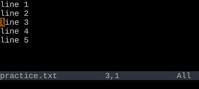
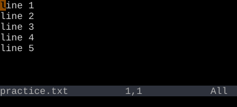
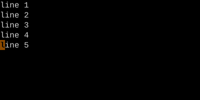

File Motions
gg, G, {n}G — jump anywhere in the file.
gg goes to line 1. G goes to the last line. {n}G or :{n} goes to line n.
Three jumps cover most navigation across a file: top, bottom, and a specific line number.
| Key | Note |
|---|---|
| g | |
| g |
| Key | Note |
|---|---|
| G |
| Key | Note |
|---|---|
| {n} | |
| G |
| Key | Note |
|---|---|
| : | |
| {n} | |
| Enter |
Reference
| Key | Action |
|---|---|
| gg | First line |
| G | Last line |
| {n}G | Line {n} |
| {n}gg | Line {n} (alternate) |
| :{n}Enter | Line {n} via Ex |
| {p}% | Line at {p} percent of file |
Worked example — gg G
Top and bottom of file.



With a count: 3G or :3Enter jumps to line 3.
See also: The Jump List, Ex Ranges